⚠️ Data provided by the repository may contain errors.
11/02/2026: Earthquakes and Seismic hazards zones added (Natural Hazards). Minor visual fixes.
05/02/2026: Major UI refresh and performance improvements.
28/01/2026: Rivers and Streams (Environment) layer update.

Explore the geography of the Athens Metropolitan Area with interactive maps and data. Here you’ll find layers on administrative boundaries, transportation networks, environment, natural hazards, POIs, energy and population statistics, all in one place.
Use the panel on the left to select the layers you want to view, and download data. Click on features to see detailed information, and use the tools provided to explore Athens in more depth.
This repository is a work in progress. More data and features will be added over time, so check back often for updates!
Have fun exploring Athens!